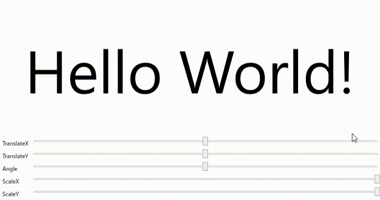

Rotate/expand/move operation is simple with bindings
There is a method of using RenderTransform to perform operations such as rotation/scaling in WPF, but it is not very simple. To perform such operations, use the TransformContentControl defined in this library. TransformContentControl defines the following five dependency properties that can be bound.
- ScaleX - Property that can specify horizontal size
- ScaleY - Property that can specify vertical size
- RotateAngle - Property that can specify rotation angle
- TranslateX - Property that allows specifying the amount of horizontal movement
- TranslateY - Property that allows you to specify the amount of vertical movement
note : All of the above deformation properties can be used with values up to ±1. For example, setting ScaleY to -1 will turn the displayed Content upside down, and setting RotateAngle to 0.5 will rotate it 180°.
A simple sample code is shown below.
<Window
~Ellipsis~>
<DockPanel LastChildFill="True">
<Grid DockPanel.Dock="Bottom">
<Grid.ColumnDefinitions>
<ColumnDefinition Width="Auto" />
<ColumnDefinition />
</Grid.ColumnDefinitions>
<Grid.RowDefinitions>
<RowDefinition />
<RowDefinition />
<RowDefinition />
<RowDefinition />
<RowDefinition />
</Grid.RowDefinitions>
<Label Content="TranslateX" Grid.Row="0" Grid.Column="0" />
<Slider Name="translateXSlider" Minimum="-1" Maximum="1" Value="0" Grid.Row="0" Grid.Column="1" />
<Label Content="TranslateY" Grid.Row="1" Grid.Column="0" />
<Slider Name="translateYSlider" Minimum="-1" Maximum="1" Value="0" Grid.Row="1" Grid.Column="1" />
<Label Content="Angle" Grid.Row="2" Grid.Column="0" />
<Slider Name="angleSlider" Minimum="-1" Maximum="1" Value="0" Grid.Row="2" Grid.Column="1" />
<Label Content="ScaleX" Grid.Row="3" Grid.Column="0" />
<Slider Name="scaleXSlider" Minimum="0" Maximum="1" Value="1" Grid.Row="3" Grid.Column="1" />
<Label Content="ScaleY" Grid.Row="4" Grid.Column="0" />
<Slider Name="scaleYSlider" Minimum="0" Maximum="1" Value="1" Grid.Row="4" Grid.Column="1" />
</Grid>
<et:TransformContentControl
DockPanel.Dock="Top"
ScaleX="{Binding ElementName=scaleXSlider, Path=Value}"
ScaleY="{Binding ElementName=scaleYSlider, Path=Value}"
RotateAngle="{Binding ElementName=angleSlider, Path=Value}"
TranslateX="{Binding ElementName=translateXSlider, Path=Value}"
TranslateY="{Binding ElementName=translateYSlider, Path=Value}">
<Viewbox>
<Label Content="Hello World!" />
</Viewbox>
</et:TransformContentControl>
</DockPanel>
</Window>
Result
